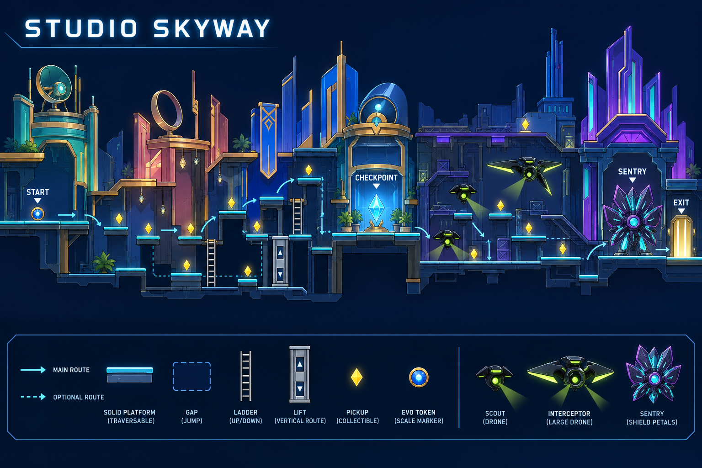
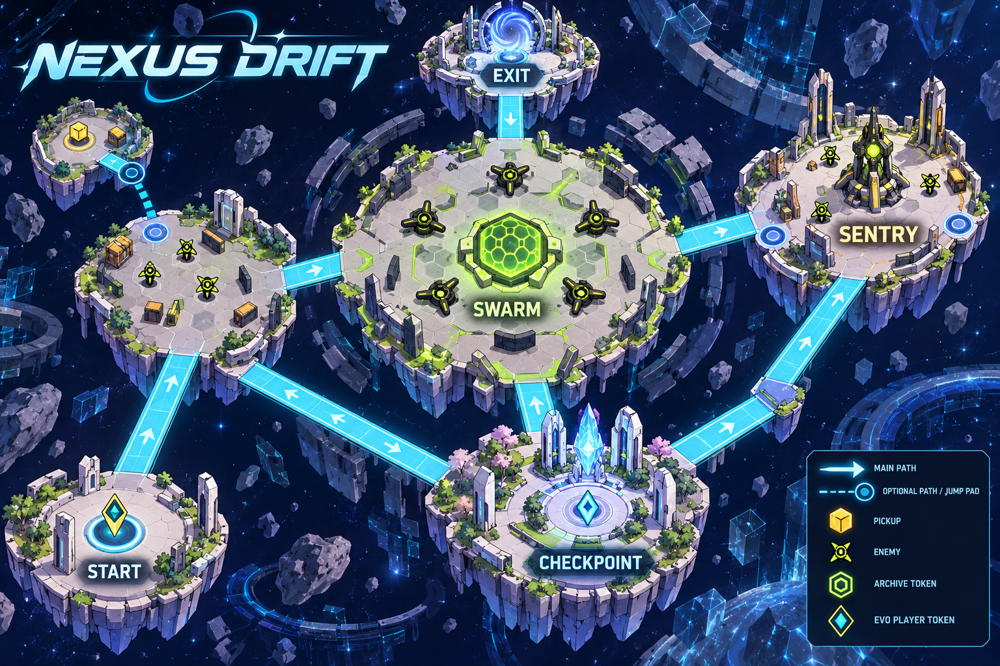
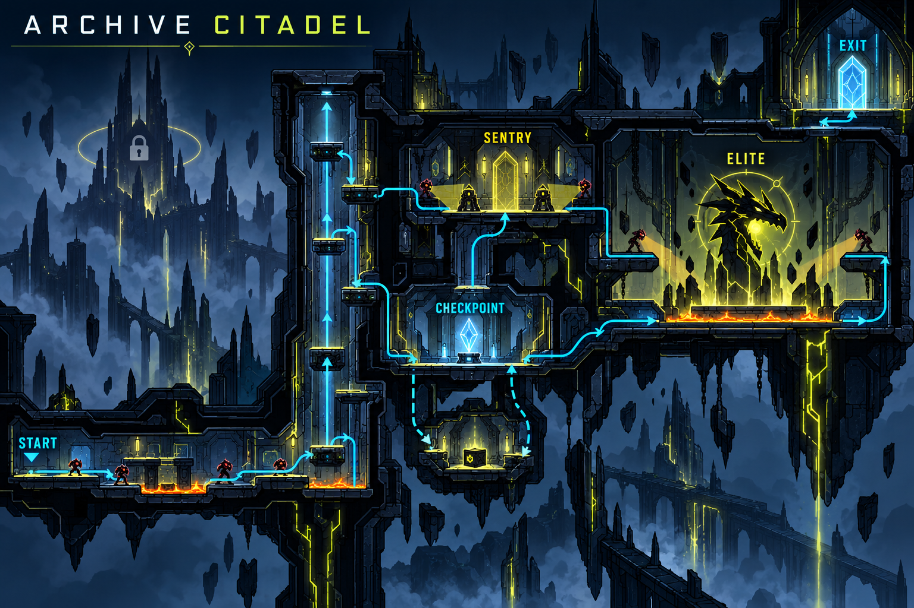

Studio traversal · Digital-space exploration · Archive fortress
Concept layouts, not playable levels. Enemy glyphs are illustrative placeholders: use the canonical Archive icons in gameplay. The implementation guide governs routes, boss order and safe checkpoints.


